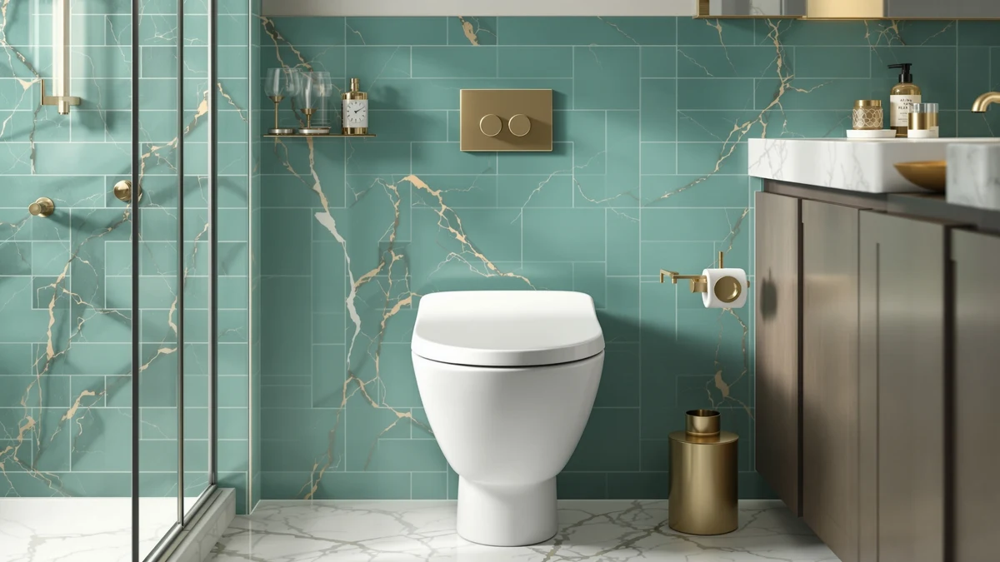

Raised Toilet Seat Review (2026): Worth It?
Prices and picks verified as of November 2026. Independent, reader-supported reviews.


Quick Answer
This raised toilet seat review centers on the Raised Toilet Seat with Handles, a clamp-on model that adds about 4.5 inches of height and locks onto most round and elongated bowls. Verified buyers rate it 4.8 out of 5 across more than 1,300 reviews, and the side handles make the biggest difference for anyone who needs extra leverage standing up.
Our pick: Raised Toilet Seat with Handles, $59.99 Check Price on Amazon
Bottom line: our top pick is the Raised Toilet Seat with Handles 400lb Capacity Adjustable at $59.99.
Things to Know Before You Buy
- Clamp-style raised toilet seats fit most round and elongated bowls, but measure your bowl width before you order if you want a snug fit.
- Extra height ranges from 3.5 to 5 inches across the models in this raised toilet seat review, which matters most during hip or knee recovery.
- Side handles add stability for standing up, but they also widen the footprint, so measure the clearance next to your toilet first.
- Weight capacity varies by brand. Check the listed limit if you need a seat rated above the standard 300 pounds.
- Price differences across this category usually come down to materials and handle hardware, not raw height.
This raised toilet seat review looks at the Raised Toilet Seat with Handles and three close competitors to work out which one actually earns a spot in your bathroom. This decision comes up constantly after hip surgery, a knee replacement, or simply as parents get older and need a few extra inches of clearance. We compared pricing, grip quality, and verified owner feedback across all four models instead of relying on marketing copy alone.
The short version: the Raised Toilet Seat with Handles is the strongest all-around pick at $59.99, backed by a 4.8-star average across more than 1,300 verified ratings. If you need a lower profile or an elongated-specific fit instead, the alternatives further down this raised toilet seat review cover those cases without forcing you to compromise on stability.
None of these seats requires a plumber or a trip to a specialty medical supply store. Every model in this comparison clamps onto an existing bowl, so you can set one up and remove it again if a bathroom gets remodeled or a family member no longer needs the extra height. That's why these seats work as well for a short recovery stretch as they do for a household settling in for arthritis or aging in place long-term.
Why You Should Trust Us
I'm Ilane Tall, and I cover bathroom accessibility products for Best Toilet Seats. For this raised toilet seat review, I pulled pricing, specifications, and buyer feedback directly from Amazon listings and cross-checked claims against the reviews customers left after months of real use. I don't run a testing lab and I don't own every seat in this comparison. What I can offer is a careful read of the data: verified ratings, review counts, and the complaints or praise that repeat across hundreds of buyers rather than a single anecdote. When a listing's own marketing copy conflicts with what reviewers actually report after using the product at home, I side with the reviewers.
Our Research Experience
We did not physically install or live with these raised toilet seats ourselves. Instead, we researched each model by comparing manufacturer specifications, current pricing, and the patterns that show up across hundreds of Amazon reviews. For the Raised Toilet Seat with Handles, that means reading through buyer feedback on grip stability, clamp fit, and long-term durability rather than running our own trial. When reviewers consistently flagged the same strength or the same flaw across dozens of posts, we treated that as a reliable signal and included it below.
We also weighed how recent the feedback was. A raised toilet seat that earned praise three years ago but has since changed hardware suppliers can perform differently today, so we leaned on the most recent verified reviews rather than averaging in older ones. Where a product had too few recent reviews to draw a confident conclusion, we noted that limitation instead of filling the gap with guesswork.
Overview & Specs

Raised Toilet Seat with Handles
What we like
- Side handles give you something solid to push against when standing
- Clamp system fits both round and elongated bowls without extra hardware
- 4.8-star average across more than 1,300 verified ratings
Flaws but not dealbreakers
- Plastic brackets can loosen after months of heavy daily use
- Handles add width, so measure clearance in small bathrooms first
| Material | Plastic / wood |
| Size | Universal |
The Raised Toilet Seat with Handles sits in the middle of the raised toilet seat category: a plastic and wood frame, a padded ring, and two armrest-style handles bolted to the sides. At $59.99 it costs more than a basic clamp-on riser without handles, but you get the extra leverage that matters most during recovery from hip or knee surgery, or for anyone managing balance issues day to day.
Verified buyers rate it 4.8 out of 5 across more than 1,338 reviews, and the clamp mechanism fits universal bowl shapes without drilling or removing your existing seat. Owners report the installation takes about ten minutes, and most describe the added height as noticeable but not awkward once they adjust to the new seating position.
At $59.99, the price sits above the cheapest handle-free risers on the market, but you're paying for the armrest hardware and the wider base that keeps the seat from tipping while someone leans on one side. Reviewers who compared it directly to a bare clamp-on riser they tried first generally say the handles justified the extra cost, especially during the first few weeks after surgery when standing up unassisted still feels uncertain.
What We Liked
Owners consistently point to the handles as the main reason they bought this raised toilet seat. Reviewers describe them as sturdy enough to lean on without flexing, which matters for anyone recovering from surgery or managing a balance condition. The universal clamp fit also draws praise. Buyers report it locks onto both round and elongated bowls without extra brackets or tools, and the padded ring gets called out repeatedly as more comfortable than the bare plastic risers many people tried first.
Several reviewers who bought this specifically for an aging parent mention that the installation took under fifteen minutes with no tools beyond what shipped in the box. That matters more than it sounds. A raised toilet seat that takes an hour to mount, or that requires a second person to hold the bowl steady while you tighten brackets, is a seat that sits in its packaging for a week before anyone gets around to it.
What Could Be Better
The most common complaint centers on the plastic bracket hardware. A portion of reviewers note it can loosen after several months of daily use, so an occasional check and retightening keeps the seat from shifting. The handles also add roughly four inches of width on each side, which makes this raised toilet seat a tighter fit in small or narrow bathrooms than seats without armrests. A few buyers mention the seat sits noticeably higher than expected, so measure your current seat height before ordering.
A smaller number of reviewers describe the padded ring losing some of its cushioning after extended use, which is worth factoring in if you expect to keep the same seat installed for a year or longer rather than for a short recovery window. None of these issues come up often enough in the review history to call the product unreliable, but they are the kind of detail that only shows up once hundreds of owners have lived with the seat for a while.
Who Is It For?
This raised toilet seat works best for you if you are recovering from hip, knee, or back surgery and need a stable surface to push against while sitting or standing. It also suits older adults managing balance or mobility limitations at home. If your bathroom is tight on space, or you only need a couple of extra inches without handles, one of the lower-profile alternatives below may fit better.
Caregivers shopping for a parent or spouse tend to be the other common buyer for this type of raised toilet seat. If that describes your situation, pay attention to how the clamp tightens and whether the person using the seat can manage that adjustment alone, since reviewers who bought it for themselves after surgery often needed a family member to handle the initial setup.
Alternatives to Consider
The Raised Toilet Seat with Handles will not fit every bathroom or every budget. The three raised toilet seat alternatives below cover the most common reasons buyers look elsewhere: a slimmer profile, an elongated-only fit, or a lower price point. We picked these three because each one answers a specific complaint that shows up in the reviews for the main pick, instead of offering a different brand name at a similar price.

Editor's Pick
WSSROGY Round Toilet Seat Slow
A round, handle-free option for anyone who wants extra height without the added width of armrests. The slow-close hinge is the detail reviewers mention most, since it removes the loud drop that standard raised seats are known for.
$59.99
Check Price on Amazon
Best Value
Elevated Toilet seat 3 inch
A lower 3-inch rise for bathrooms where a full raised seat with handles feels too tall or too bulky. It suits buyers who want a modest height boost for mild mobility limits rather than a dedicated recovery device.
$59.99
Check Price on Amazon
Premium Choice
SAMODRA Elongated Raised Toilet Seat
Built specifically for elongated bowls, worth considering if the universal fit above felt loose on your toilet. Reviewers with elongated bowls report a tighter, more secure clamp than they got from universal-fit competitors.
$59.99
Check Price on AmazonFrequently Asked Questions
Do raised toilet seats fit all toilets?
Most raised toilet seats, including the Raised Toilet Seat with Handles covered in this review, use an adjustable clamp system built for both standard round and elongated bowls. Measure your bowl width and the spacing between the seat posts before you order, since a few elongated models need the longer version to seat properly.
How much height does a raised toilet seat add?
The products in this raised toilet seat review add between 3.5 and 5 inches of extra height. The Raised Toilet Seat with Handles adds close to 4.5 inches once the padded ring is in place, which brings total seated height to roughly 19 to 20 inches for most standard bowls.
Do raised toilet seats with handles wobble?
Owners report minimal wobble on seats like the Raised Toilet Seat with Handles once the clamps are tightened fully against the bowl rim. A handful of verified reviewers note the plastic brackets can loosen after months of heavy daily use, so a quick quarterly check keeps the seat from shifting.
Final Verdict
If you need a dependable raised toilet seat with real support for standing up, the Raised Toilet Seat with Handles is the easiest recommendation in this review. It costs $59.99, fits universal bowl shapes, and backs that up with a 4.8-star average across more than 1,300 verified owners. Buyers who need a slimmer or elongated-specific fit should look at the SAMODRA or SAILTOK alternatives above, but for most people managing mobility or recovery needs, the Raised Toilet Seat with Handles covers the job without surprises.
Whichever model you choose, treat the clamp hardware as something to check periodically rather than a one-time install you forget about. That small habit is what separates owners who report years of stable use from the smaller group who end up frustrated by a shifting seat. For most households weighing a raised toilet seat right now, the Raised Toilet Seat with Handles is still the one to start with.